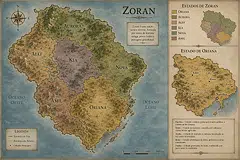
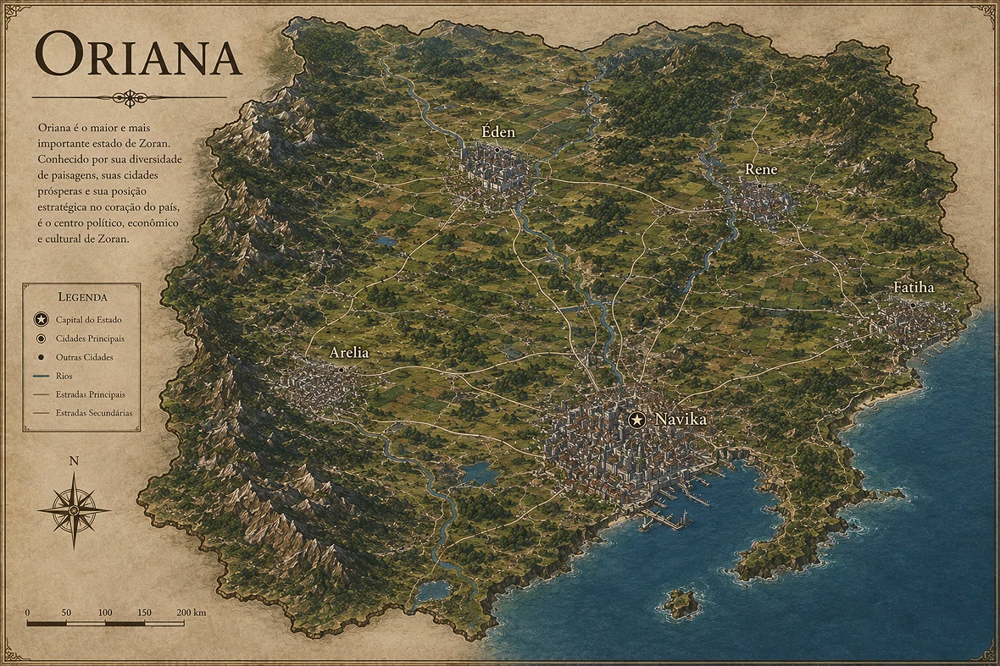
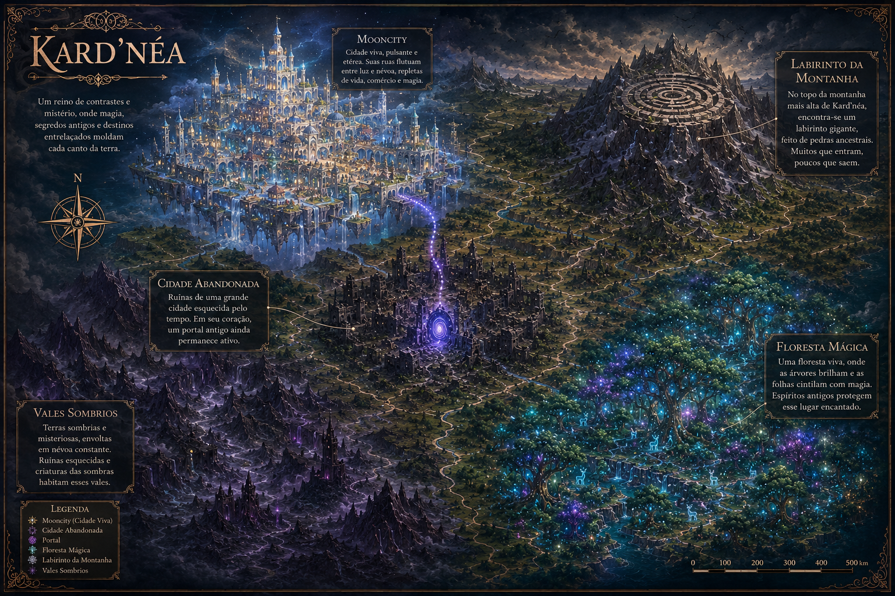
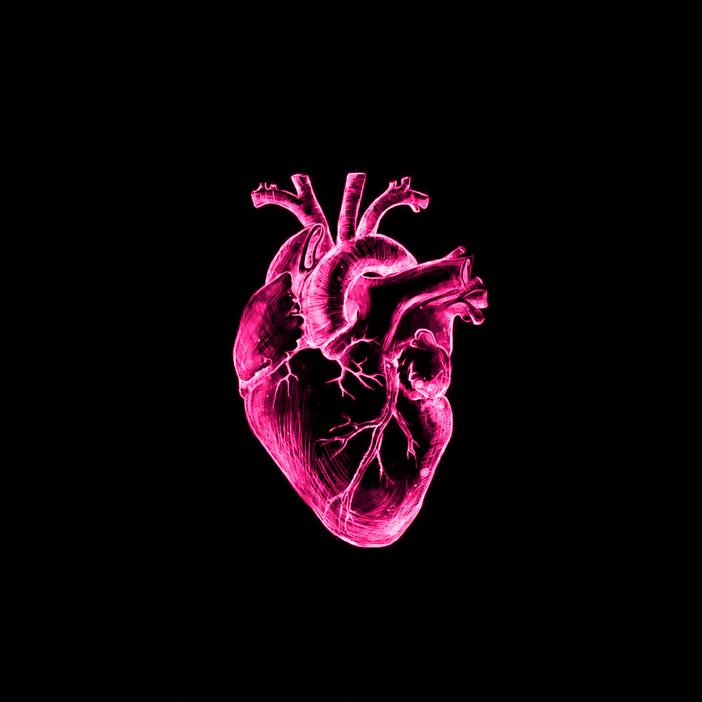
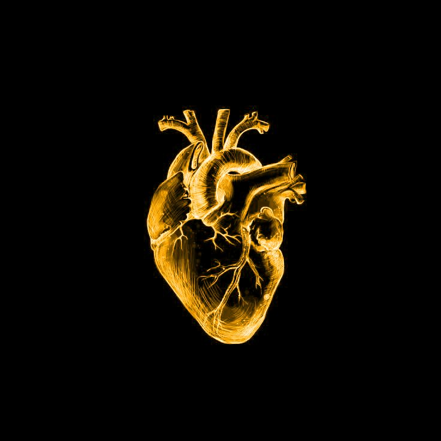
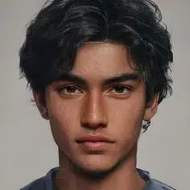
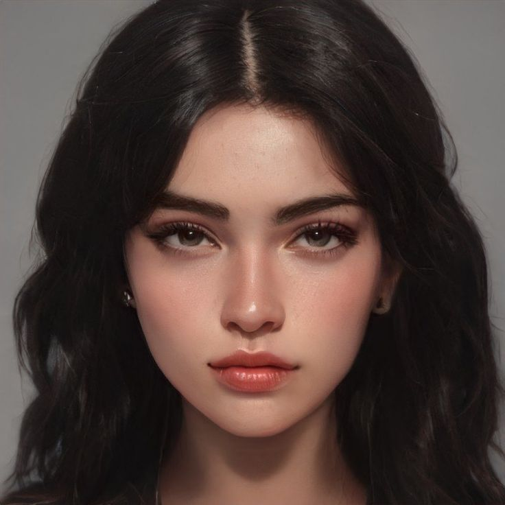

Organizando a Saga
Como todo livro, os meus também precisam de uma organização. Eu tenho estado tão perdida com o tanto de informação que eu acumulei desde 2020 que tudo tem estado uma bagunça. Então, eu decidi criar esse site para poder me localizar melhor, pra entender o que de fato eu estou mantendo para essa versão da saga e tudo mais.
Propósito da Saga
A saga Kard'néa surgiu de um jeito muito diferente do que é hoje, essa é a sexta versão da história. Já ocorreram várias mudanças, mas uma coisa não mudou: o propósito. E justamente, o propósito dessa história é transmitir esperança para os leitores, apresentar personagens com problemas reais e com problemas de vida que são comumente encontrados na nossa sociedade e trazer o processo de cura desses personagens, transmitindo a ideia de que há esperança mesmo para as pessoas mais quebradas.
Sinopse
Theo, Alana e Ravi carregam um peso invisível – corações sujos por medos e traumas. Mas quando o limite é atingido, uma nova realidade os chama, onde suas almas se manifestam visivelmente. Perseguidos por sombras de seus próprios fantasmas interiores, eles devem buscar o lendário Coração de Ouro. Mas neste lugar de espelhos e verdades ocultas, a verdadeira cura pode não ser o que parece. Será que a solução está em encontrar o Coração de Ouro, ou há mais em jogo do que eles imaginam?
Glossário
Kard'néa
Néa kárdia, que significa coração novo no grego. Os personagens estão atrás de um novo coração, um coração limpo, onde permite as feridas cicatrizarem e a cura transbordar de si.
Kard'mávri
Mávri kárdia, que significa coração podre no grego. Os inimigos de um novo coração é o coração sujo, que tem medo de mexer no que dói e se deixa influenciar pelo ego.
Coração de Ouro
O terceiro estágio da cura, onde além de ter cicatrizado suas feridas, você ajuda outras pessoas a se curarem.
Equinócio de primavera
Momento de equilíbrio perfeito entre luz e escuridão nos dois hemisférios.
Mooncity
Acompanha as fases da lua e as nossas fases também. Tem dia que brilhamos inteiro (cheia), tem dia que só sobra um fio de luz, e tem dia que somimos. Mas é aí que o ciclo recomeça.
Labirinto do Tempo
Local onde acontecem as viagens entre mundos, somente durante o Equinócio de Primavera (momento de equilíbrio perfeito entre luz e escuridão).
Korvak
Refere-se principalmente a Michael Korvac, um famoso personagem e supervilão cósmico da Marvek Comics. Ele é conhecido por sua imensa capacidade de absorver energia e alterar a realidade.
Ejaa
O Primeiro Portador do Coração de Ouro; Criador do KARD'NÉA; Único que nunca teve outro coração. Onipresente, Onisciente, Onipotente.
Geografia
Por se tratar de uma obra de fantasia, toda a geografia é reinventada. A história se passa no vasto país de Zoran, um território de dimensões continentais que se assemelha em proporção e diversidade ao Brasil. Geograficamente, o país é dividido em seis estados principais: Aurora, Alef, Kia, Nova, Amil e, o maior e mais imponente de todos, Oriana.
É dentro de suas fronteiras que encontramos cidades marcantes como Arelia, Rene, Fatiha e a misteriosa Éden. No entanto, é na pulsante cidade de Navika que os caminhos se cruzam e onde os principais eventos da trama ganham vida.


O Mundo Fantasioso (Kard'néa)
O mundo de Kard'néa muda de acordo com o coração dos viajantes. Todos iniciam na Floresta Mágica, uma floresta viva que conhece seu passado, presente e futuro. Indo para o norte, há uma Cidade Abandonada com um portal antigo. Ainda no norte, há a etérea Mooncity (cheia de comércio e magia) e o Labirinto da Montanha. Mais ao sul, encontram-se os Vales Sombrios.

As Regras da Magia
Coração Sujo
Cheio de feridas, traumas e influências nocivas. Age como um espelho distorcido das dores. Quanto mais sufocado e sobrecarregado, mais perto está de se romper e apodrecer.

Coração Puro
O estado de inocência original com o qual todos nascem. É sujo pelas vivências negativas, mas nunca destruído. Pode ser alcançado novamente através da cura.

Coração Dourado
O ápice da evolução emocional. Transmuta o bem-estar individual em uma força magnética que atua na regeneração do coração de outras pessoas. É o farol para os perdidos.
Protagonistas

Theodoro Oliveira Soares (Teco)
Idade: 22 anos | MBTI: ISFP
Trauma: Acidente na pista de skate que o tirou do auge da carreira. Perdeu sua identidade e propósito.
Poder: Escudo do acreditar (manifesta convicção fisicamente).
"Eu quero viver, quero mesmo. Mas eu não consigo. Eu virei o meu fracasso. Eu me perdi."

Alana Mendes Harumi
Idade: 19 anos | MBTI: INFJ
Trauma: Forçada a ser "mãe substituta" dos irmãos. Anulou a própria adolescência e sonhos de escritora.
Poder: Coração Transparente (vê a essência das pessoas através de feixes de luz).
"Você não precisa consertar tudo, Alana. Você não é útil... você é necessária. Existe uma diferença."
Ravi Cavalcanti Leal
Idade: 21 anos | MBTI: ESTJ/ISTJ
Trauma: Pais assassinados, cresceu em orfanato. Medo visceral de perder o controle e ser rejeitado.
Poder: Eco do Amanhã (ouve/ve fragmentos do futuro ou advertências).
"Sinto, com um terror absurdo, que a máscara que usei por tanto tempo finalmente caiu. E eu não sei se estou pronto para ver o que sobrou."
Outros Personagens do Grupo
- João Ferreira Bueno Castro: Sente-se um "fantasma", usa o silêncio como armadura. (Curioso, prático, frágil).
- Eloá Lopes Barbosa: Ex-bully da Alana, busca aprovação. (Sincera, temperamental, orgulhosa).
- Diego Gomes Fontes: Usa o humor como colete à prova de balas. (Elétrico, hipervigilante).
- Luiza Fontes Rezende: Pacificadora, teme o silêncio tenso. (Animada, esforçada).
- Arthur Moraes Linhares: "Camaleão", tenta resolver o problema de todos. (Intenso, ansioso).
- Paloma Vieira Rocha: Usa o sarcasmo como escudo. (Observadora, fria, leal).
Linha do Tempo Cronológica
Infância na Biblioteca
Alana, Theo, Jeffrey e Julia passam a infância juntos na biblioteca da Tia Nana em Navika.
A Despedida (Há 4 anos)
Alana muda-se para estudar em colégio interno. Despede-se de Theo nos corredores da biblioteca.
O Acidente (Há 1 ano)
Theo vence competição com laser flip back tailslide, mas sofre fratura grave na perna. Isola-se do mundo.
O Reencontro e o Chamado (Presente)
Theo e Alana se reencontram na biblioteca. A luz branca os engole e eles acordam na Floresta Mágica de Kard'néa.
Resumo por Capítulo
ATO I - RECONHECER
Capítulo 001: Mais que campeão, morto. (Theo)
Theo vive preso em um loop de depressão. Alterna entre o passado e o presente, onde decide ir à biblioteca e reencontra Alana, quebrando sua inércia.
Capítulo 002: Primeiros passos. (Theo)
Theo visita os amigos Takahashi e tem uma reconciliação emocionante com o pai. Admite em voz alta: "Eu preciso de ajuda".
Capítulo 003: Mais que perfeita, quebrada. (Alana)
Alana não consegue parar de pensar em Theo. Reencontra Jeff no ônibus e tem um momento de cuidado com Ravi.
Capítulo 004: Memórias. (Alana)
Alana encontra uma caixinha rosa com um antigo caderno. Uma luz branca misteriosa aparece. Percebe que precisa de ajuda.
Capítulo 005: Mais que forte, preso. (Ravi)
Ravi descobre a conexão entre Jeffrey, Theo e Alana. Recebe uma ligação sobre sua ex-namorada Juliana. Admite que gosta de Alana.
Capítulo 006: A luz. (Ravi)
Alana desaparece. Ravi vê fenômenos estranhos, um homem brilhante, e é engolido por uma luz branca.
ATO II - DECIDIR
Capítulo 007: Um novo começo. (Theo)
Os cinco protagonistas se encontram na Floresta Mágica. Theo salva Alana de uma queda. Decidem subir a montanha.
Capítulo 008: A floresta está viva. (Theo)
Encontram uma caverna com nomes, incluindo o da Tia Nana. Uma voz misteriosa responde. Theo cai em uma armadilha de rede.
Capítulo 009: Reflexo. (Ravi)
Na cidade abandonada, cada um é confrontado por espelhos que revelam sua versão mais jovem e ferida.
Capítulo 010: Korvak. (Ravi)
Atacados por Korvak. Diego revela telecinesia. Lídia os resgata e os leva para Mooncity.
Capítulo 011: "O que é Kard'néa?" (Alana)
Alana e Theo conversam no telhado. Égon explica o universo de cura, o Coração de Ouro e os poderes de cada um.
Capítulo 012: Coração transparente. (Alana)
Na Festa da Lua Minguante, Alana e Eloá se reconciliam. Alana manifesta seu poder de ver os feixes emocionais.
Capítulo 013: A última calmaria. (Theo)
Preparação para o labirinto. Theo reflete sobre sua evolução. É revelado o destino de quem desiste: virar cascas vazias.
Capítulo 014: O limiar. (Ravi)
Subida da montanha. Traumas se manifestam fisicamente. Alana confronta Diego. Eles atravessam o grande portão.
Capítulo 015: O início. (Alana)
Alana enfrenta suas feridas com Ejaa. Revive a morte de Julia e a rejeição. Ravi lhe diz que é vista. O grupo se reúne diante do portal.
Mural de Ideias & Extras
Subuniversos
- Subuniverso de espelhos: Olhar para dentro de si mesmo.
- Subuniverso da estrada e o quarto das rosas: Acorde, as rosas também têm espinhos.
- Subuniverso da solitude: Silencie os barulhos à sua volta.
- Subuniverso das correntes: Se solte das correntes.
- Subuniverso do baile: Tire as máscaras.
- Subuniverso chuvoso: Largue o guarda-chuva para ser regado.
- Subuniverso do relógio sem ponteiros: A ansiedade de querer controlar o futuro ou lamentar o passado.
As Fases da Lua
Lua Nova: Início do ciclo, renovação, "solo fértil" para ideias.
Lua Crescente: Crescimento, expansão, dar os primeiros passos.
Lua Cheia: Culminância, emoções intensas, revelação.
Lua Minguante: Finalização, limpeza, liberação do que não serve mais.
Os guias
Tia Nana (Evangelina): Despertar - Evangelista (Universo 1) - "portadora de boas notícias", "mensageira do evangelho" ou "aquela que evangeliza";
Égon: Acolher - Pastor (Universo 2 - Mundo 0) - pode refletir o sentido de “guia espiritual”, significa "pastor";
Malaquias: Visualizar - Profeta (Universo 2 - Mundo 1) - significa "mensageiro de Deus". É um nome bíblico masculino, referente ao último profeta do Antigo Testamento;
Sophia e Lemaitre: Saber - Mestre (Universo 2 - Mundo 2) - significa "O Mestre" (Le Maître), derivado do termo francês antigo para mestre e sophia significa sabedoria;
Júnia: Enviar - Apóstolo (Universo 2 - Mundo 3) - na Bíblia, Júnia é mencionada em Romanos 16:7 como uma mulher notável e apóstola no cristianismo primitivo.